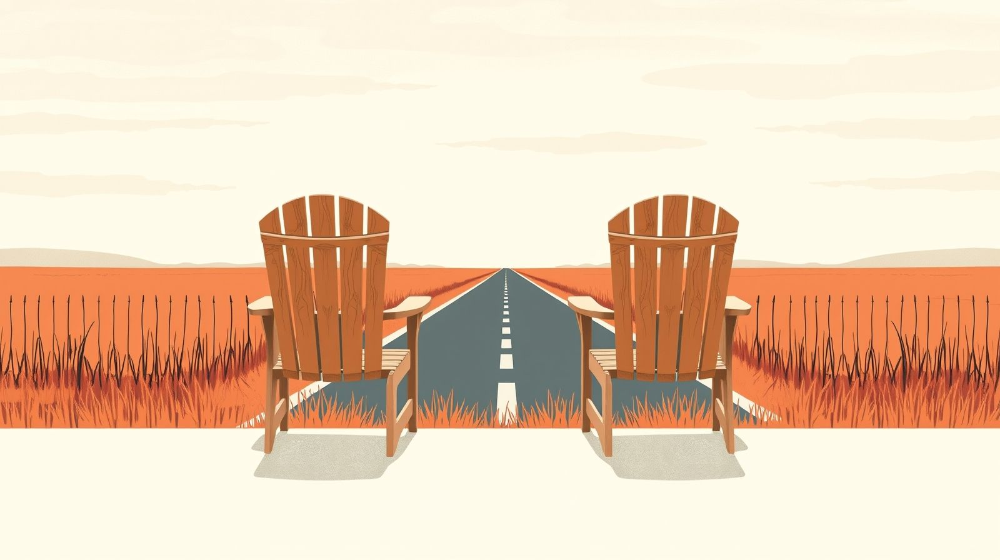
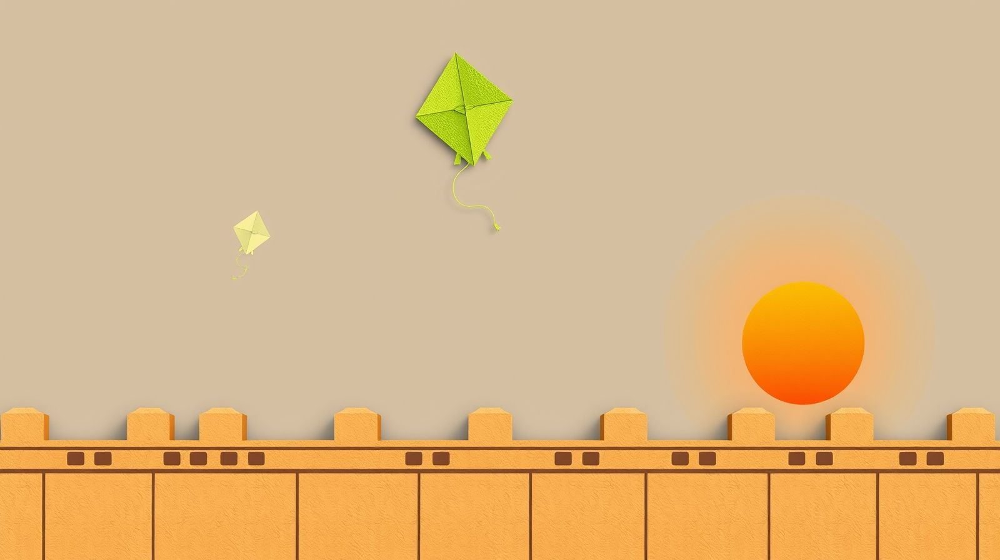
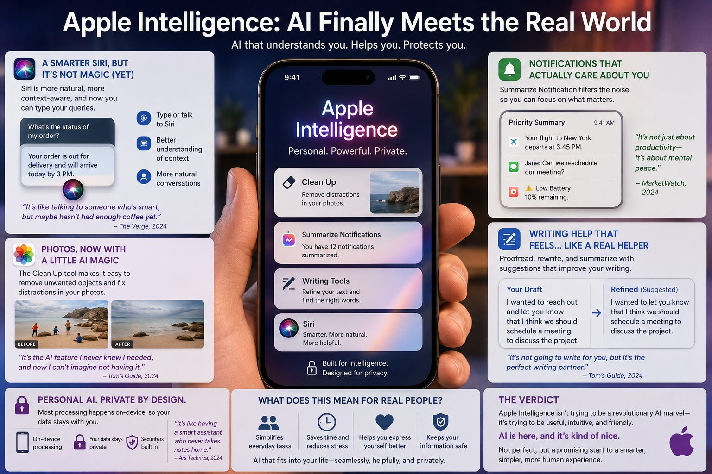

Finding Stability in Unfinished Work: A Guide to Endurance
The author reflects on the concept of "working through it," which signifies ongoing personal growth amidst uncertainty. Through patience and resilience, they have learned that stability lies not in finishing tasks, but in maintaining the strength to keep progressing while confronting the unfinished.
FEBRUARY 18, 2026 · 3 MIN READ
-
Society

Data Dilemma: Starving for Truth in a Sea of Misinformation
The author reflects on the disconnect between economic data and lived reality, highlighting how numbers can be manipulated to serve narratives. They advocate for active engagement, critical analysis, and diversified information sources — the fight for truth begins with awareness and informed conversation.
March 04, 2025 · 9 MIN READ
-
Technology
Siri's Major AI Overhaul: Features of iOS 18.5 You Need to Know
Apple is set to upgrade Siri significantly with the introduction of Apple Intelligence. Key improvements include better contextual understanding, more natural conversations, tighter integration with Apple apps, and personalized suggestions — finally positioning Siri as a competitive AI assistant.
March 03, 2025 · 5 MIN READ
-
Politics

Confronting Inequality: The American and Canadian Experience
The histories of the United States and Canada reveal ambitions of prosperity shadowed by deep-rooted inequalities, systemic injustices, and legacies of colonialism. Both nations must acknowledge their failings and engage in rectifying injustices for a fairer future.
November 18, 2024 · 4 MIN READ
-
Society

India and Pakistan: Twin Dreams Divided, Bound by Hope
In August 1947, the British Empire partitioned South Asia into India and Pakistan, resulting in the displacement of 15 million people. Seventy-six years later, both nations grapple with founding dreams and present realities — and the future demands cooperation and reform.
November 18, 2024 · 5 MIN READ
-
Politics
Fostering Unity in Canada: Combating Divisive Rhetoric
A reflection on the divisive rhetoric increasingly shaping Canadian discourse, and a call to recommit to the values of unity, plurality, and shared responsibility that built the country in the first place.
November 07, 2024 · 4 MIN READ
-
Politics
2024 Election Results: A Call for Change
An analysis of the 2024 U.S. election outcome and what it signals about the appetite for change — across the political map, the economy, and the social contract that defines a country in flux.
November 06, 2024 · 7 MIN READ
-
Technology

How Apple's AI Enhances Everyday Life: A Review
How Apple's privacy-first approach to on-device AI changes what everyday users can expect — from smarter notifications to richer writing tools — without the data-extraction trade-offs of competing platforms.
October 29, 2024 · 7 MIN READ
-
Society
Dream Big: Transforming Education for Every Child
A case for treating education as the highest-leverage investment any society can make — and a look at what's quietly working in classrooms most policy debates ignore.
October 09, 2024 · 7 MIN READ
-
Reflection
How Integrity and Empathy Define Us
On the quiet decisions that build character — and why the smallest acts of empathy compound into the kind of integrity that holds when everything else gives way.
October 09, 2024 · 7 MIN READ
-
Reflection
Ratan Tata: The Giant Who Wore His Greatness Lightly
A tribute to Ratan Tata — a leader whose scale was matched by his restraint. What his life teaches about ambition that isn't loud, and impact that doesn't announce itself.
October 09, 2024 · 7 MIN READ
-
Politics
Leadership Contrasts in U.S. Election: A Canadian's View on Global Impact
From north of the border, the 2024 American election looked less like a domestic contest and more like a referendum on the global order. What a Canadian sees that an American can't.
September 11, 2024 · 10 MIN READ
-
Politics

Trump vs. Harris: Policy, Strategy, and Leadership in U.S. Presidential Debate
Beyond the soundbites — a close read of what each candidate actually proposed, where their strategies diverged, and what their debate performances reveal about how each would lead.
September 11, 2024 · 9 MIN READ
-
Travel

Whispers of Wanderlust: An Eco-Friendly Journey Across Canada
Notes from a slow, low-impact crossing of Canada — the small choices that add up, the places that reward patience, and what travel asks of us when the planet is the destination too.
March 15, 2024 · 3 MIN READ
-
Travel

An Ode to Winter: Discovering Unforeseen Charms in Toronto's Embrace
A love letter to a season most people endure rather than enjoy — and to a city that, once you stop fighting the cold, hands back something quiet, generous, and unmistakably its own.
March 14, 2024 · 4 MIN READ
-
Travel
Wanderlust Diaries: Journeys Beyond Borders
An opening entry from a longer travel journal — what borders mean when you've crossed enough of them, and the kinds of stories that only show up after the photographs stop.
March 14, 2024 · 2 MIN READ